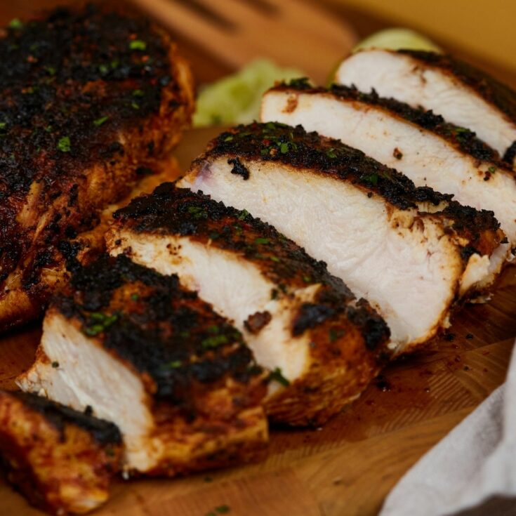

Blackened-Chicken Recipe

Blackened Chicken is a healthy and tasty meal that is a go to staple in the south.
Here is all of the tips you will need to be able to make it yourself!
- Chicken
- Paprika
- Chili Powder
- Kosher Salt
- Curry Powder
- Garlic Powder
- Onion Powder
- Avocado Oil
- Preheat oven to 350 degrees F (175 degrees C). Lightly grease a
baking sheet. Heat a cast iron skillet over high heat for 5 minutes
until it is smoking hot
- Mix together the seasoning. Oil the chicken breasts with cooking spray on both
sides, then coat the chicken breasts evenly with the spice mixture
- Place the chicken in the hot pan, and cook for 1 minute. Turn, and
cook 1 minute on other side. Place the breasts on the prepared
baking sheet
- Bake in the preheated oven until no longer pink in the center andBake in the preheated oven until no longer pink in the center and the juices run clear, about 5 minutes.
the juices run clear, about 5 minutes